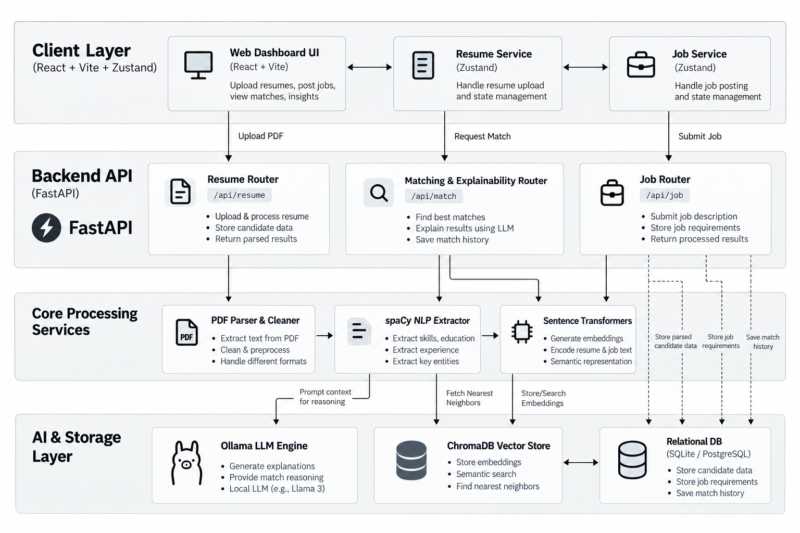

Reg. No & Name
In the current professional landscape,the rapid evolution oftechnology and the integration of Artificial Intelligence have fundamentally altered career development and job recruitment. As industries shifttoward more skill-centric hiring models, job seekers face the challenge of aligning their profiles with complex, changing marketrequirements. This project,"Intelligent Resume Analysis and Job Recommendation System," addresses these challenges by leveraging advanced techniques such as Retrieval-Augmented Generation (RAG) and Large Language Models (LLMs)to provide a dynamic, intelligent, and personalized career-readiness platform.By moving beyond traditional keyword-based screening,this system enables comprehensive skill assessment, gap analysis, and tailored career guidance, helping candidates navigate the future of work with precision and confidence.
The rapid growth of Artificial Intelligence is transforming the modern job market, introducing new roles while continuously changing the skills required for existing professions. In this changing environment,traditional resume screening systems that primarily compare keywords with job descriptions may not provide meaningful guidance to job seekers. This project proposes an AI-Powered Career Intelligence System that goes beyond conventional resume analysis by evaluating a candidate's skills, experience, projects, and career readiness in the context ofthe evolving AI-driven workforce.
The system accepts a candidate's resume and extracts relevantinformation such as technical skills, education, experience, projects, and certifications using Natural Language Processing techniques. The extracted information is converted into semantic embeddings and stored in a vector database, enabling the system to understand relationships between a candidate's profile, job descriptions, and required skills beyond simple keyword matching. Using Retrieval-Augmented Generation (RAG), relevantinformation is retrieved and provided to a Large Language Modelfor contextual analysis.
Instead of producing only a resume score,the system generates a personalized career intelligence report containing the candidate's strengths, skill gaps, emerging skills they may need to develop, suitable career paths, relevantjob opportunities, ATS compatibility, and actionable resume improvementrecommendations. It can also provide an interactive AI-based conversation where users can ask questions abouttheir career profile and receive context-aware guidance.
The primary objective ofthe projectis to transform resume analysis from a static evaluation process into an intelligent career-readiness system capable of adapting to the rapidly changing demands ofthe AI era.By combining Python, Natural Language Processing, semantic search, vector databases, Retrieval-Augmented Generation, and Large Language Models,the proposed system aims to help individuals understand not only where they currently stand, but also how they can prepare themselves forthe jobs ofthe future.
Keywords: Artificial intelligence, Resume Retrieval, Natural Language Processing, Large Language Models, Retrieval-Augmented Generation, Semantic Search, Career Guidance
The proposed system is an end-to-end web application consisting of a highly responsive React/Vite frontend and a powerful FastAPI Python backend. The system ingests PDF resumes, extracts text, cleans it, and identifies named entities (skills, education, job titles). It then converts these profiles into mathematical vectors. When a job description is provided, the system performs a semantic search to find the closest matching candidates and uses an LLM to justify the decision.
Existing ATS platforms rely on relational databases and full-text search engines (like Elasticsearch) configured for keyword matching. Our improvement introduces Retrieval-Augmented Generation (RAG). Instead of querying a database for a keyword, we embed the entire job description into a high-dimensional vector space. We then retrieve the resumes that exist closest to that point in space. Once retrieved, we augment the prompt of a Large Language Model with this context, asking the LLM to act as a seasoned technical recruiter to explain the match. This entirely replaces the outdated Boolean search logic with true artificial intelligence.
| Feature | Previous Model (Traditional ATS) | Current Model (VECTOR AI Analyzer) |
|---|---|---|
| Matching Mechanism | Exact keyword intersection (Regex / Boolean). | Semantic similarity using sentence-transformers and vector
embeddings. |
| Context Awareness | Low. Cannot differentiate between "used Python for 5 years" vs "read about Python". | High. Uses spaCy NLP to accurately extract skills tied to
specific years of experience. |
| Database Architecture | Relational databases (SQL) storing raw text. | ChromaDB (Vector Database) for fast, similarity-based mathematical nearest-neighbor search. |
| Explainability | None. Outputs an arbitrary percentage score. | High. Uses Ollama (LLM) to generate detailed paragraphs explaining matched skills and highlighting missing skill gaps. |
| Candidate Feedback | Usually none (candidates are silently rejected). | Generates actionable "Resume Improvement Plans" to help candidates bridge skill gaps. |
The system is designed using a modern micro-architecture, ensuring a clear separation of concerns between the user interface, the API routing, and the heavy machine-learning workloads.

The presentation layer is built using React 19 and bundled with Vite for lightning-fast hot module replacement. We utilized Tailwind CSS v4 for a clean, minimalist, and highly responsive dark-themed UI. For global state management across the dashboard, we implemented Zustand, which manages the active job selections and candidate data without the boilerplate of Redux.
The backend is driven by FastAPI, chosen for its asynchronous capabilities and high performance. It serves as the routing bridge, handling incoming multipart form data (PDF uploads), validating payloads using Pydantic schemas, and routing data to the appropriate ML services.
When a resume is uploaded:
Instead of matching raw text strings, the cleaned text is passed through sentence-transformers
(e.g., all-MiniLM-L6-v2) which converts the text into dense numerical vectors (embeddings). These
embeddings are stored in ChromaDB, an open-source vector database. When a job description is
processed, it is also embedded, and ChromaDB calculates the cosine similarity to find the "nearest
neighbors"—representing the most semantically relevant resumes.
Once the top matches are retrieved from ChromaDB, they are passed to the Explainability Engine. This engine utilizes an LLM (accessed via Ollama or an external LLM API). The system injects the candidate's parsed skills, the job requirements, and the similarity score into a prompt, instructing the LLM to generate a human-readable justification. This represents the "Generation" phase of the RAG pipeline.
While ChromaDB handles the vector indices, a traditional relational database (SQLite/PostgreSQL) is proposed alongside it to permanently store candidate metadata (names, emails), track match history over time, and build long-term talent pools.
During the development and integration phase, several critical technical implementations were carried out to connect the frontend to the backend AI models seamlessly. Here is a detailed breakdown of the exact development work completed:
JobInputForm.tsx component to correctly
capture job titles, companies, and descriptions, and linked it to the backend /jobs/process API
endpoint.resume.service.ts, job.service.ts, and
matching.service.ts to utilize browser localStorage. This ensures that when a user
refreshes the page, their uploaded resumes and processed jobs survive the session reload.globals.css to ensure the entire application respected the premium, dark-mode aesthetic of the
dashboard, and replaced hardcoded mock data in the Overview dashboard (StatsRow.tsx,
RecentMatchesTable.tsx) with real data derived from the Zustand stores.app/main.py file, allowing the React development server (running on a different port) to
successfully communicate with the Python backend without security rejections.POST /resume/upload endpoint, which
temporarily saves the PDF to an uploads/ directory, extracts the text, runs it through the
spaCy NLP pipeline, calculates initial skill scores, and returns a massive structured JSON
object back to the client instantaneously.Uncaught Error: Objects are not valid as a React child. This occurred because the FastAPI
backend was returning the LLM's explanation as a nested JSON object (containing fields like
job_id, semantic_score, matched_skills, etc.), but the React frontend
(ExplainabilityPanel.tsx) was attempting to render the raw object directly into the DOM.matching.service.ts layer and
parsed the structured JSON from the backend into a beautifully formatted, human-readable Markdown string.
This allowed the ExplainabilityPanel to safely render the LLM's detailed reasoning,
successfully displaying the matched skills and missing skills dynamically.The implementation of this architecture yields the following results:
CORSMiddleware in FastAPI to explicitly allow
origins, credentials, and methods from the frontend dev server.localStorage persistence layer in the
frontend to cache data, while designing the blueprint for a full SQLite/SQLAlchemy implementation
for the next phase.While the current system proves the viability of Semantic Search and RAG in recruitment, several enhancements are planned for future iterations:
sentence-transformers model
specifically on IT and Engineering resumes to better capture niche domain-specific terminologies.The VECTOR AI Resume Intelligence project successfully demonstrates how modern AI techniques can completely overhaul legacy Applicant Tracking Systems. By abandoning flawed keyword-matching in favor of Vector Embeddings and Retrieval-Augmented Generation, we have created a system that truly understands candidate experience.
Furthermore, by integrating an Explainability Engine driven by Large Language Models, we have solved the "black box" problem inherent in most AI recruiting tools. This project proves that AI can be used not just to automate recruitment, but to make it fairer, more accurate, and entirely transparent.